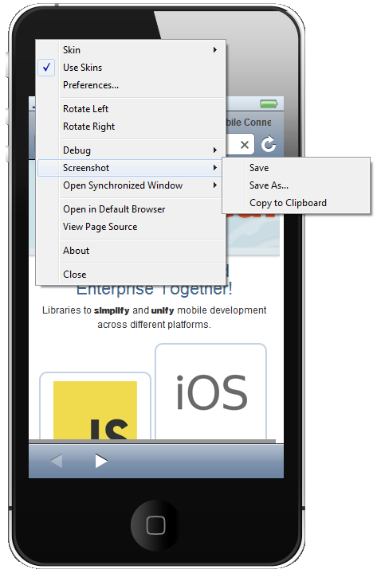

BrowserSim
New Skins
BrowserSim got iPad and iPad Mini skins.

Related JIRAs: JBIDE-13685, JBIDE-13684, JBIDE-13416.
Screenshots
We added the ability to easily take screenshots of BrowserSim.

Weinre
Now you can inspect your page's source with Winre.